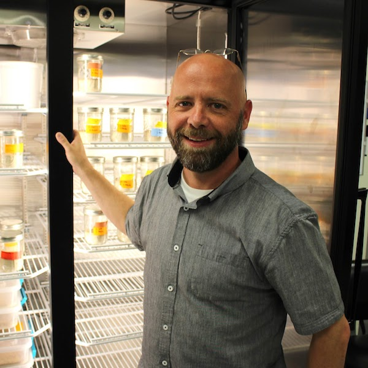
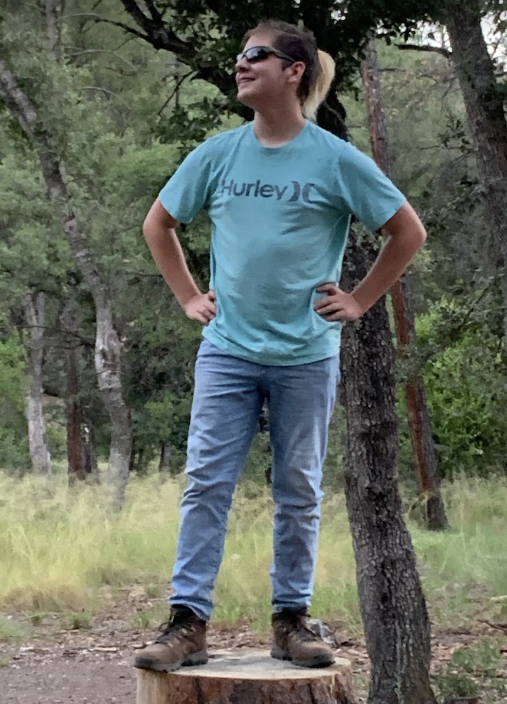
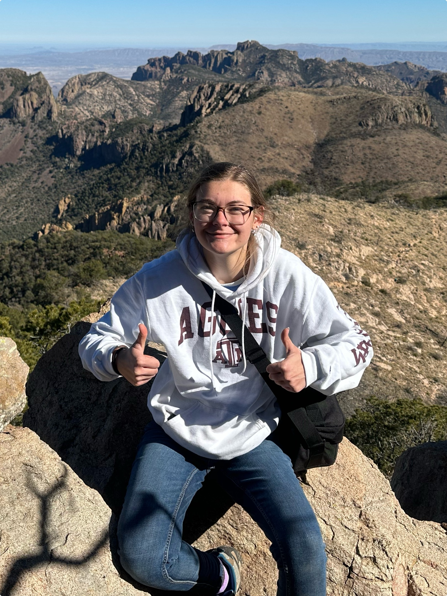
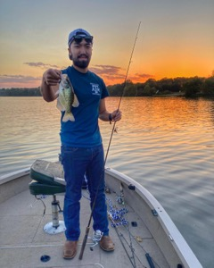
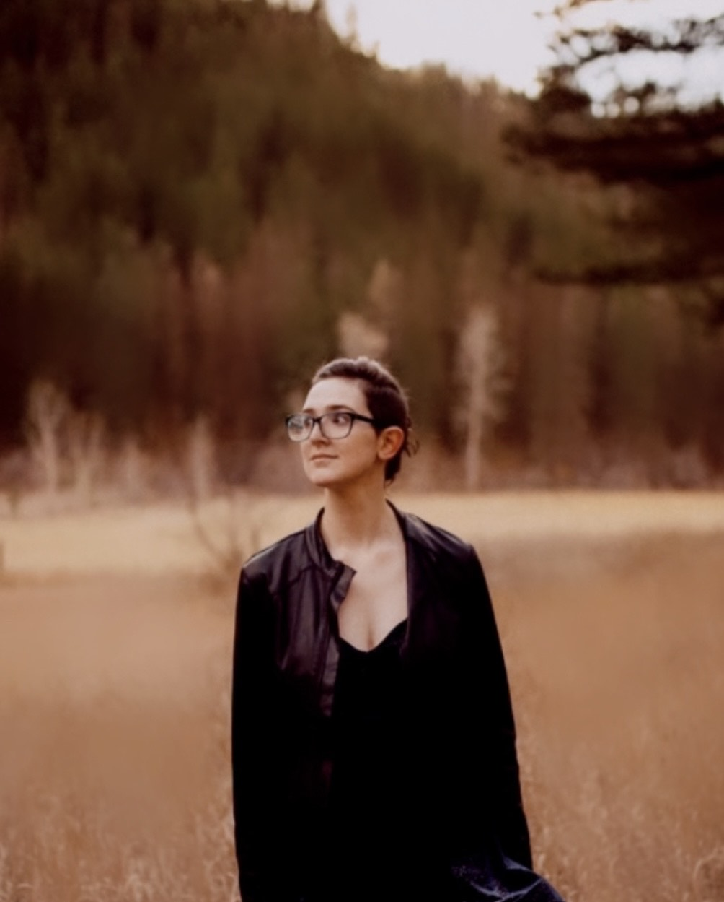
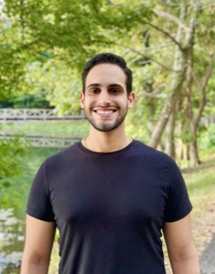
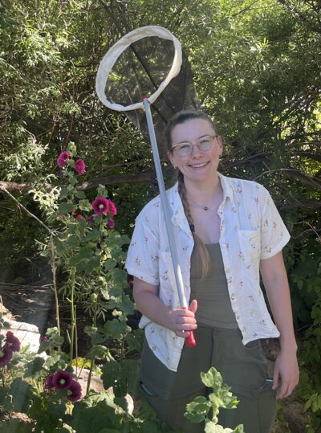
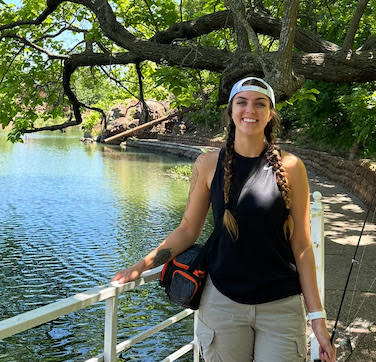
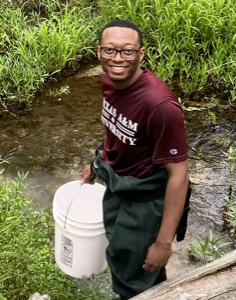
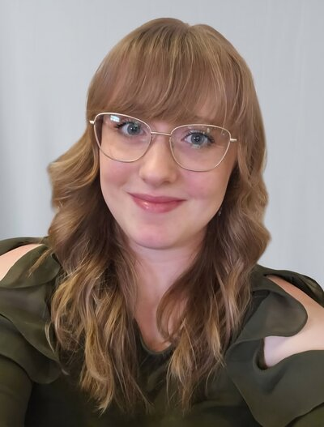

A lot of what we do here hinges on bringing undergraduates into fundamental research earlier than most labs do. Ten of the people listed below are undergraduate researchers running their own projects, often publishing before they graduate. The list that follows covers the principal investigator, research staff, graduate students, a post-bacc, undergraduate researchers, and alumni.









